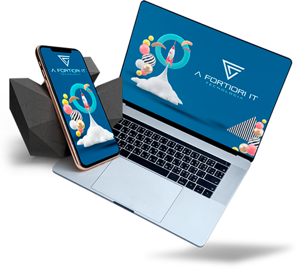
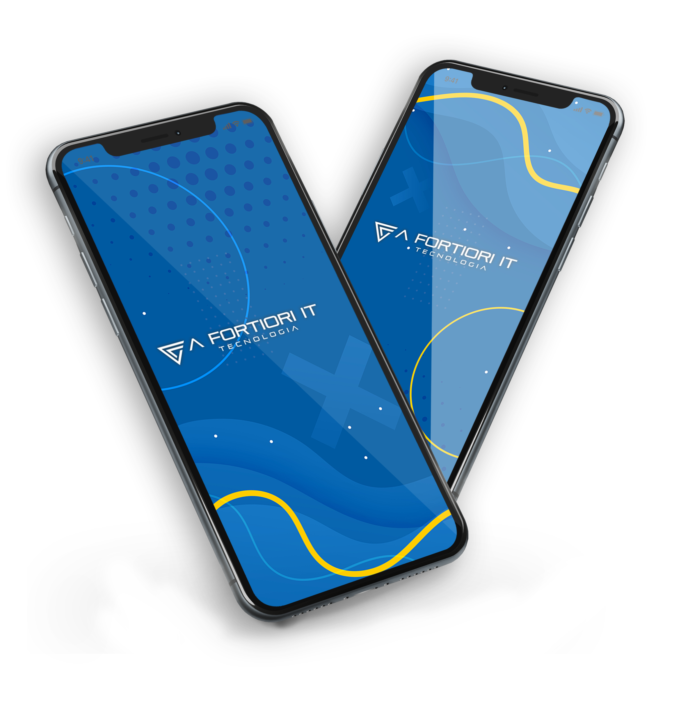

Aplicativos e Sistemas
Personalizados
Softwares para Coworkings, Clínicas e Profissionais da Saúde.
O pioneiro para gestão de coworkings com agendamento.
Faça sua cotação!


-
Quem Somos
-
-
A FORTIORI IT vem para reformular e inovar no mercado de programação! Nós iremos realizar o seu sonho de
ter um sistema na palma da sua mão. Vamos colocar você colado na tecnologia!
A A Fortiori IT conta com um corpo de colaboradores especializados e com know-how na área para que você
tenha um sistema especializado e moderno. Nós vamos entender a sua necessidade e traduzir para um projeto
que irá transformar e elevar ainda mais o patamar do seu negócio! A Startup A FORTIORI IT vem para reformular
e inovar no mercado de programação! Nós iremos realizar o seu sonho de ter um sistema na palma da sua mão.
Vamos colocar você colado na tecnologia!
inp